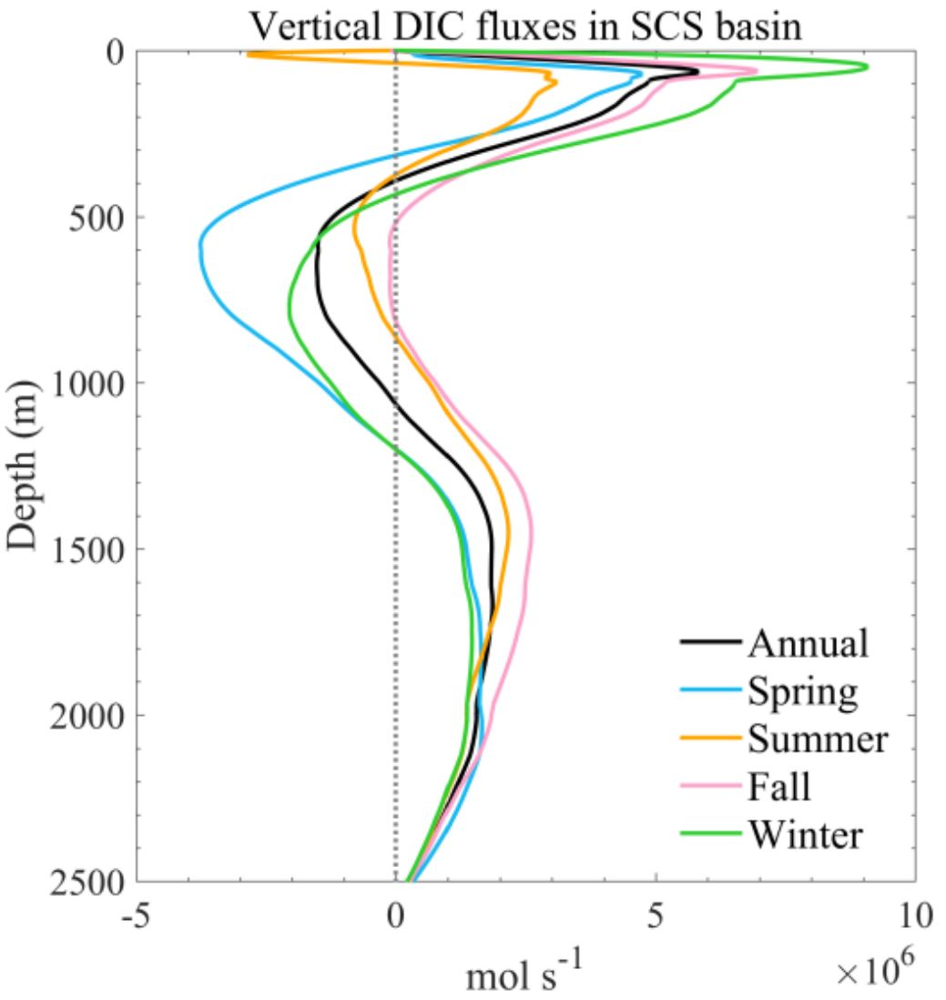
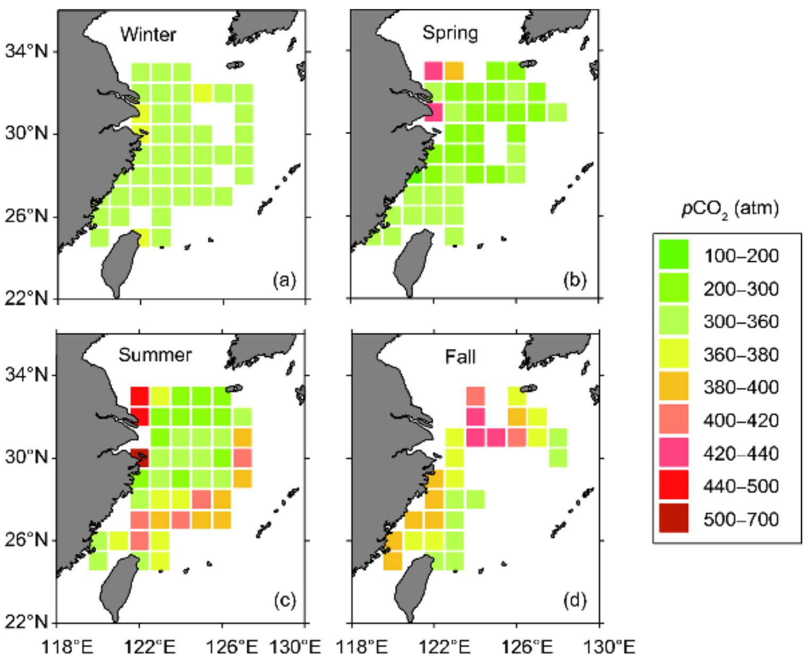

The carbonate system of the northern South China Sea: Seasonality and exchange with the western North Pacific
Journal: Progress in Oceanography (2021)

The suitability of the Honeywell Durafet to the measurement of pH in productive, high-fouling, and
highly-turbid estuarine environments was investigated at the confluence of the Murderkill Estuary and
Delaware Bay (Delaware, USA). Three different flow configurations of the SeapHOx sensor equipped with
a Honeywell Durafet and its integrated internal (Ag/AgCl reference electrode containing a 4.5 M KCl gel
liquid junction) and external (solid-state chloride ion selective electrode, Cl-ISE) reference electrodes
were deployed for four periods between April 2015 and September 2016. In this environment, the
Honeywell Durafet proved capable of making high-resolution and high-frequency pH measurements on
the total scale between pH 6.8 and 8.4. Natural pH fluctuations of >1 pH unit were routinely captured
over a range of timescales. The sensor pH collected between May and August 2016 using the most refined
SeapHOx configuration exhibited good agreement with multiple sets of independently measured
reference pH values. When deployed in conjunction with rigorous discrete sampling and calibration
schemes, the sensor pH had a root-mean squared error ranging between 0.011 and 0.036 pH units across
a wide range of salinity relative to both pHT calculated from measured dissolved inorganic carbon and
total alkalinity and pHNBS measured with a glass electrode corrected to pHT at in situ conditions. The
present work demonstrates the viability of the Honeywell Durafet to the measurement of pH to within
the weather-level precision defined by the Global Ocean Acidification Observing Network (GOA-ON, ≤
0.02 pH units) as a part of future estuarine CO2 chemistry studies undertaken in dynamic environments
Dynamics of dissolved inorganic carbon in the South China Sea: A modeling study
Journal: Progress in Oceanography (2020; as coauthor)

Using a validated, three-dimensional, coupled physical-biogeochemical model, this study examines the dynamics of dissolved inorganic carbon (DIC) in the South China Sea (SCS). The model identifies characteristic differences in DIC concentrations between the SCS and adjacent West Philippine Sea (WPS), showing an increase in DIC of up to 140 μmol kg−1 in the upper 2000 m layer from the WPS to the vicinity of the northern SCS. This increasing pattern continues from the northern to the southern SCS, but to a much lower degree (< 20 μmol kg−1 increase). Overall, spatial and seasonal variation of DIC in the SCS are evidently modulated by both intrinsic dynamics (e.g., river plumes, vertical mixing, basin-scale upwelling and eddies), and extrinsic exchanges via various straits. The inputs of DIC to the SCS are mainly through the Luzon Strait in the upper layer (depth, h < 600 m) and from the deep WPS at > 1600 m. Exports of DIC occur through other straits and the SCS intermediate water outflow (600 m to 1600 m) via the Luzon Strait. The model shows upward transport of DIC in the upper 400 m and below 1100 m, in contrast to downward DIC transport between 400 m and 1100 m. Seasonally, both DIC concentrations and fluxes in the upper layer have larger dynamic ranges in winter than in summer, attributable to the combined effects of enhanced Kuroshio intrusion, stronger vertical upwelling and greater biogeochemical alterations.
A balance of various constitutive DIC terms revealed that horizontal and vertical advection is an order of magnitude greater than the other terms of the DIC budget, which has an opposite sign and thus tends to neutralize each other. The model indicated a decrease in the DIC inventory in the euphotic zone in spring and summer caused by net DIC consumption, and a contrasting increase in fall and winter primarily influenced by DIC vertical transport. In intermediate and deep layers, physical transport processes play a dominant role in the seasonal variation of DIC inventories. In the upper 150 m, DIC fluxes and their stoichiometry with nutrient fluxes, which potentially impact the air-sea CO2 fluxes, are largely driven by excess vertical DIC fluxes compared to horizontal fluxes via the Luzon Strait.
Carbon fluxes in the China Seas: An overview and perspective
Journal: Sci. China Earth Sciences (2018; as coauthor)

This paper aims to provide an overview of regional carbon fluxes and budgets in the marginal seas adjacent to China. The “China Seas” includes primarily the South China Sea, East China Sea, Yellow Sea, and the Bohai Sea. Emphasis is given to CO2 fluxes across the air-sea interface and their controls. The net flux of CO2 degassing from the China Seas is estimated to be 9.5±53 TgC yr−1. The total riverine carbon flux through estuaries to the China Seas is estimated as 59.6±6.4 TgC yr−1. Chinese estuaries annually emit 0.74±0.02 TgC as CO2 to the atmosphere. Additionally, there is a very large net carbon influx from the Western Pacific to the China Seas, amounting to ~2.5 PgC yr−1. As a first-order estimate, the total export flux of particulate organic carbon from the upper ocean of the China Seas is 240±80 Tg C yr−1. This review also attempts to examine current knowledge gaps to promote a better understanding of the carbon cycle in this important region. The total riverine carbon flux through estuaries to the China Seas is estimated as 59.6±6.4 TgC yr−1. Chinese estuaries annually emit 0.74±0.02 TgC as CO2 to the atmosphere. Additionally, there is a very large net carbon influx from the Western Pacific to the China Seas, amounting to ~2.5 Pg C yr−1. As a first-order estimate, the total export flux of particulate organic carbon from the upper ocean of the China Seas is 240±80 Tg C yr−1. This review also attempts to examine current knowledge gaps to promote a better understanding of the carbon cycle in this important region.
Spatiotemporal variability of nitrous oxide in a large eutrophic estuarine system: The Pearl River Estuary, China
Journal: Marine Chemistry (2016; as coauthor)

Using a validated, three-dimensional, coupled physical-biogeochemical model, this study examines the dynamics of dissolved inorganic carbon (DIC) in the South China Sea (SCS). The model identifies characteristic differences in DIC concentrations between the SCS and adjacent West Philippine Sea (WPS), showing an increase in DIC of up to 140 μmol kg−1 in the upper 2000 m layer from the WPS to the vicinity of the northern SCS. This increasing pattern continues from the northern to the southern SCS, but to a much lower degree (< 20 μmol kg−1 increase). Overall, spatial and seasonal variation of DIC in the SCS are evidently modulated by both intrinsic dynamics (e.g., river plumes, vertical mixing, basin-scale upwelling and eddies), and extrinsic exchanges via various straits. The inputs of DIC to the SCS are mainly through the Luzon Strait in the upper layer (depth, h < 600 m) and from the deep WPS at > 1600 m. Exports of DIC occur through other straits and the SCS intermediate water outflow (600 m to 1600 m) via the Luzon Strait. The model shows upward transport of DIC in the upper 400 m and below 1100 m, in contrast to downward DIC transport between 400 m and 1100 m. Seasonally, both DIC concentrations and fluxes in the upper layer have larger dynamic ranges in winter than in summer, attributable to the combined effects of enhanced Kuroshio intrusion, stronger vertical upwelling and greater biogeochemical alterations.
A balance of various constitutive DIC terms revealed that horizontal and vertical advection is an order of magnitude greater than the other terms of the DIC budget, which has an opposite sign and thus tends to neutralize each other. The model indicated a decrease in the DIC inventory in the euphotic zone in spring and summer caused by net DIC consumption, and a contrasting increase in fall and winter primarily influenced by DIC vertical transport. In intermediate and deep layers, physical transport processes play a dominant role in the seasonal variation of DIC inventories. In the upper 150 m, DIC fluxes and their stoichiometry with nutrient fluxes, which potentially impact the air-sea CO2 fluxes, are largely driven by excess vertical DIC fluxes compared to horizontal fluxes via the Luzon Strait.